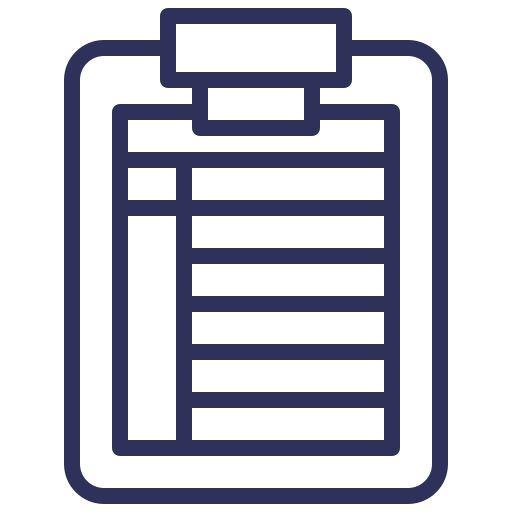

<ion-header>
    <ion-toolbar color="primary">
        <ion-buttons slot="start">
            <!-- <ion-menu-button autoHide="false"></ion-menu-button> -->
            <ion-back-button color="light" defaultHref="tebs"></ion-back-button>
        </ion-buttons>
        <ion-title style="margin-right:50px;" class="title" text-center>
            | Progress Report
        </ion-title>
    </ion-toolbar>
</ion-header>

<ion-content>
    <ion-grid>
        <ion-row>
            <ion-col size="6">
                <div>
                    <ion-card text-center padding color="light" (click)="subjects()">
                        
                        <h3>Subjects</h3>
                    </ion-card>
                </div>
                <hr>


            </ion-col>
        </ion-row>
    </ion-grid>


</ion-content>